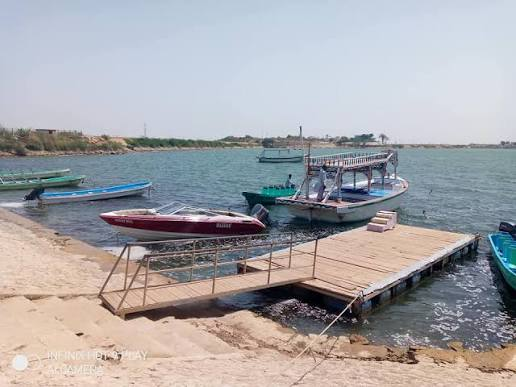
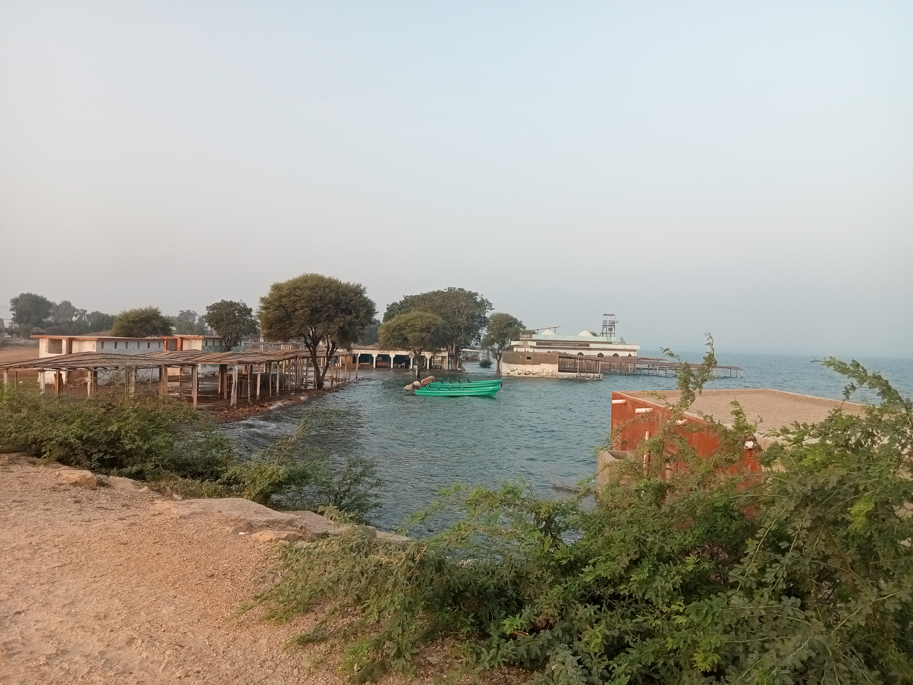
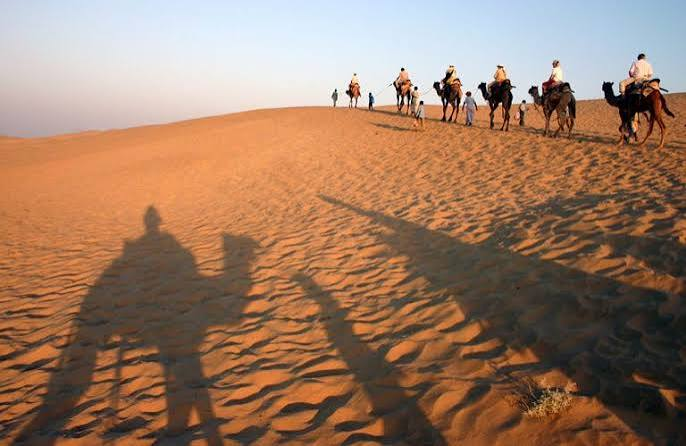
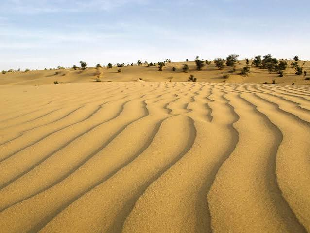

Natural & Scenic Sites of Sindh
Nature, to me, isn't just science — it's a place where I find peace. Out here, nothing disturbs me; I can simply enjoy the fresh air and feel connected to something greater, without any tension. This page covers two places, Keenjhar Lake and Thar Desert, where I experienced exactly that kind of stillness.
Keenjhar Lake
Keenjhar Lake was the first true nature spot I had ever seen. When I arrived by car and saw the lake early in the morning during winter, the view was fantastic and amazing. I felt a cold breeze in the air, and as I watched the water ripple, I realized something — life is like the waves on that water. The waves keep changing suddenly, yet the water itself stays in the same place. I think life is similar: situations keep changing again and again, but people who stay happy learn to see everything as normal, and keep a positive outlook no matter what changes around them.


Thar Desert
Thar Desert is one of the largest deserts in the world, stretching across parts of Sindh and into neighboring regions. Known for its golden sand dunes, clear night skies, and resilient local communities, it offers a completely different landscape from the rest of Sindh — vast, quiet, and largely untouched by modern development. Even without visiting in person, the desert's reputation as one of Sindh's most striking natural landscapes makes it a place worth including here.

